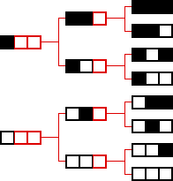

Cellular Automata and Fractal Evolution
Cellular Automaton Number of States
Here we count the number of nbhd configurations for
S = 2
and
N = 3
. Cells unspecified in the calculation are shown in red.
Here are the 2
3
= 8 neighborhood configurations for a one-dimensional N = 3 binary automaton, arranged as they are in our
CA software
.

Return to
Number of States
.